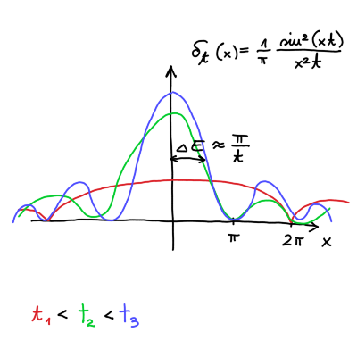
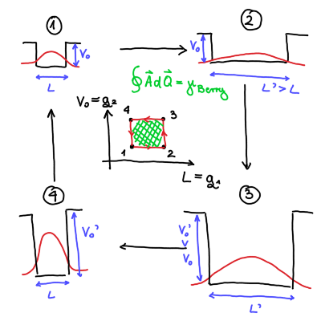
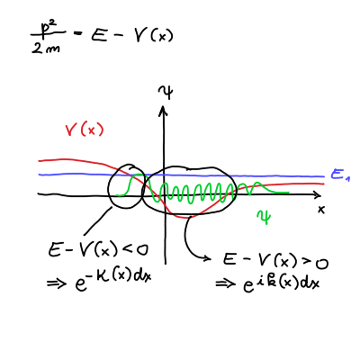

13. predavanje iz Kvantne mehanike
Table of Contents
1. Fermijevo zlato pravilo
Izpeljali smo verjetnost, da delec po dolgem času skoči iz \( n \)-tega lastnega stanja v \( k \)-ti lastno stanje ob prisotnosti motnje \( V \), ki je neodvisna od časa, vendar se pojavi ob času \( t > 0 \).
Verjetnost je
\[ P_{km} (t) = \frac{\left| V_{km} \right|^2}{\hbar ^2} \delta \delta_t \left( \frac{1}{2 \hbar} \left( E_k - E_m \right) \right)t, \]
kjer je \( V_{km} = \left\langle k \middle| V \middle| m \right\rangle \).

Priporočam bralcu, da si nariše \( \delta_t(x) \) in opazuje, kako se spreminja v odvisnosti od parametra \( t \). Opazil bo, da se funkcija oža in viša proti neskončnosti okoli izhodišča \( x = 0 \).
Širina med izhodiščem in krivuljo, ki vodi do prve ničle. Širina je \( \Delta x \), ki je
\[ \Delta x = \frac{\pi}{t} = \frac{\Delta E}{2 \hbar}, \]
kjer je \( \Delta E \) definirana kot razlika lastne energije \( E_k = E_1 ' + E_2 ' \) lastnega stanja \( \left| k \right\rangle \) in lastne energije \( E_m = E_1 + E_2 \) lastnega stanja \( \left| m \right\rangle \).
\[ \Delta E = E_k - E_m \]
Iz tega sledi \( \Delta E t \approx \hbar \).
Z minevanjem časa \( t \to \infty \) se oblika krivulje oža in viša proti neskončnosti. To pomeni, da \( \Delta E \to 0 \).
Iz tega sledi, da so skoki med stanjema \( n \) in \( k \) ob krajšem času večji, saj je \( \Delta E \) večji. Z večanjem časa se manjša \( \Delta E \), kar pomeni, da je manjša verjetnost, da najdemo delec v drugem stanju kakor \( \left| m \right\rangle \).
Delec bomo vedno našli, saj je \( P_m (t = 0) = 1 \).
To se ne uporablja pri harmonskem oscilatorju, ampak pri sipanju delcev.
Imejmo končno stanje \( E_k \), ki ima v svoji okolici \( \epsilon > 0 \) veliko drugih možnih energij. Naj bo na intervalu \( \mathrm{d} E_k = E_k \pm \epsilon \) možnih \( \mathrm{d} N \) energijskih stanj.
To lahko opišemo z gostoto stanj
\[ \rho_k = \frac{\mathrm{d} N}{\mathrm{d} E_{k}} \cdot \frac{1}{N_k} = \frac{\mathrm{d} P}{\mathrm{d} E_k} \]
Zanima nas, v katerem stanju \( k \), ki je različen od osnovnega stanja \( m \), bo delec po času \( t \). Do tega rezultata bomo prišli preko verjetnosti
\[ P = \sum\limits_{k \ne m}^{} P_{kn} \to \int\limits_{- \infty}^{\infty} P_{km} (t) \rho \left( E_k \right) \mathrm{d} E_k, \]
kjer smo predpostavili zvezen spekter energijskih nivojev. To predpostavko lahko tudi drugače ubesedimo: matrični element \( V_{km} \) se ne spreminja veliko oz. \( E_k \approx E_m \).
Upoštevamo prej izpeljano verjetnost \( P_{km} \) in ko čas \( t \to \infty \) integral postane
\[ P \overset{t \to \infty}{=} \int\limits_{- \infty}^{\infty} \frac{\left| V_{km} \right| ^2}{\hbar ^2} 2 \pi \hbar \delta \left( E_k - E_m \right) \rho \left( E_k \right) \, \mathrm{d} E_k = \frac{2 \pi}{\hbar} \left| V_{km} \right| ^2 \rho \left( E_m \right) t. \]
Po dolgem času verjetnost za prehod v neko bližnje stanje \( E_k \) narašča linearno.
Iz tega sledi Fermijevo zlato pravilo
\[ w = \frac{\mathrm{d} P}{\mathrm{d} t} = \frac{2 \pi}{\hbar} \left| V_{km} \right| ^2 \rho \left( E_m \right). \]
Pravilo ima tudi nekatere pogoje.
verjetnost, da delec ostane v istem stanju je enako
\[ P_{mm} = \left| c_m \right| ^2 \approx 1 - \lambda ^2 + \ldots, \]
Posledično pomeni, da je verjetnost za prestop v drugo stanje \( P_{km} \ll 1 \).
- \( t \to \infty \)
- \( V_{km} \) ni zelo odvisen od začetnega stanja \( E_k \).
Verjetnost radioaktivnega razpada je konstantna
\[ w = \frac{\mathrm{d} P}{\mathrm{d} t} = \mathrm{konst}, \]
kar sledi iz Fermijevega zlatega pravila.
Če imamo \( N \) delcev, bo število delcev, ki bo radioaktivno razpadlo enako
\[ \mathrm{d} N = - N \mathrm{d} P = - NP \mathrm{d}t. \]
Slednje lahko precej enostavno rešimo
\[ \frac{\mathrm{d} N}{N} = - w \mathrm{d } t \implies N(t) = N_0 e^{- w t}, \]
kjer velja \( t \gg \frac{1}{w} \).
2. Adiabatne spremembe in kvantne faze
Imejmo časovno odvisen Hamiltonian \( H(t) \). Poglejmo si primere adiabatnih sprememeb
- Neskončno potencialna jama z dolžino \( L(t = 0) \). Osnovno stanje je \( \sin (kx) \). Potencialno jamo počasi širimo, torej \( L(t) \). Za dovolj počasno širjenje bo sistem ostajal v istem stanju \( \sin \left( k(t) x \right) \).
- Imamo končno potencialno jamo globine \( V_0 (t = 0) \), ki ji bomo s časom spreminjali globino \( V_0 (t) \).
Primer hipne spremembe (protipomenka adiabatne spremembe) je, da neskončno potencialno jamo širine \( L \) hipno razširimo na \( L' > L \). Tak primer znamo rešiti z znanjem iz kvantnomehanskih vaj iz začetka leta.
Postavimo sedaj problem.
Imejmo Hamiltonian, ki je časovno odvisen od \( n \) spremenljivk \( H (\vec{Q}(t)) \), kjer je \( \vec{Q} = \left( q_1, q_2, \ldots, q_n \right) \), kjer so to lahko npr. \( q_1 = L(t) \), \( q_2(t) = V_0 (t) \), ipd.
Rešujemo enačbo
\begin{equation} \label{eq:2} H(\vec{Q}) \left| \psi_n \left( \vec{Q} \right) \right\rangle = E_n \left( \vec{Q} \right) \left| \psi_n \left( \vec{Q} \right) \right\rangle, \end{equation}kjer je \( \left| \psi_n \left( \vec{Q} \right) \right\rangle \) nedegenerirano lastno stanje.
Označimo rešitev lastno stanje pri neki vrednosti poljubnega parametra ob času \( t \) z
\[ \psi_n^0 \left( \vec{r}, t \right) = \left\langle \vec{r} \middle| \psi_n^0 \left( \vec{Q} (t) \right) \right\rangle. \]
Za primer a) je ta funkcija enaka
\[ \psi_n^0 = A \sin \left( k(t) r \right) e^{- \mathrm{i} \frac{\hbar ^2 k ^2 (t)}{\hbar} t} . \]
Stanje \( \psi_n^0 \) ne reši Schrödingerjeve enačbe
\[ \mathrm{i} \hbar \frac{\partial }{\partial t} \left| \psi_n^0 (\vec{r}, t) \right\rangle \ne H \left( \vec{Q} \right) \left| \psi_n^0 \left( \vec{r}, t \right) \right\rangle \]
Adiabatna sprememba mora biti tako, da je verjetnostna gostota skozi čas ostaja enaka. Za a) primer je ta pogoj
\[ \frac{1}{L} \frac{\mathrm{d} L}{\mathrm{d} t} \ll \frac{\Delta E_n}{ \hbar}, \]
kjer velja \( \Delta E_n \Delta t > \hbar \).
Sistem mora ves čas ostajati v istem \( n \)-tem lastnem stanju \( H \left( \vec{Q} \right) \), vendar lahko neka časovno neodvisna faza \( \phi_n(t) \) spreminja lastni vektor \( \left| \psi_n \left( \vec{Q} \right) \right\rangle \) .
\[ \psi_n \left( \vec{r}, t \right) = e^{\mathrm{i} \phi_n (t)} \psi_n^0 \left( \vec{r}, t \right) \]
Velja
\begin{equation} \label{eq:1} \left\langle \psi_n^0 \middle| \psi_n^0 \right\rangle = 1. \end{equation}Vstavek s fazo \( \phi_n \) vstavimo v Schrödingerjevo enačbo
\begin{align*} \mathrm{i} \hbar \frac{\partial }{\partial t} \left| \psi_n \right\rangle &= H \left| \psi_n \right\rangle \\ \mathrm{i} \hbar \left( \mathrm{i} \frac{\partial }{\partial t} \phi_n (t) e^{\mathrm{i} \phi_n (t)} \left| \psi_n^0 \right\rangle + e^{\mathrm{i} \phi_n (t)} \frac{\partial }{\partial t} \left| \psi_n^0 \right\rangle\right) &= H e^{\mathrm{i} \phi_n(t)} \left| \psi_n^0 \right\rangle = E_n \left| \psi_n^0 \right\rangle \end{align*}Po množenju z bra \( \left\langle \psi_n^0 \right| \) in upoštevanjem lastnosti \re{eq:1} dobimo
\[ \mathrm{i} \hbar \left( \mathrm{i} \frac{\partial }{\partial t} \phi_n (t) \left\langle \psi_n ^0 \middle| \psi_n^0 \right\rangle + \left\langle \psi_n^0 \middle| \frac{\partial }{\partial t} \psi_n^0 \right\rangle\right) = \mathrm{i} \hbar \left( \mathrm{i} \frac{\partial }{\partial t} \phi_n(t) + \left\langle \psi_n^0 \middle| \frac{\partial }{\partial t} \psi_n^0 \right\rangle \right) = E_n \left\langle \psi_n^0 \middle| \psi_n^0 \right\rangle = E_n \]
Fazo sedaj razdelimo na dva dela \( \phi_n = \gamma_n + \theta_n \) tako, da velja
\[ \mathrm{i} \hbar \left( \mathrm{i} \frac{\partial }{\partial t} \gamma_n (t) + \left\langle \psi_n^0 \middle| \frac{\partial }{\partial t} \psi_n^0 \right\rangle \right) = E_n + \hbar \frac{\partial }{\partial t} \theta_n (t) = 0. \]
Z drugimi besedami, izberemo si tako vrednosti, da faze ni.
Rešimo lahko sedaj desno stran enačbo
\[ \frac{\mathrm{d} \theta_{n}(t)}{\mathrm{d} t}= - \frac{E_n (t)}{\hbar}, \]
katera rešitev je
\[ \theta_n = - \frac{1}{\hbar} \int\limits_0^t E_n(t') \, \mathrm{d} t'. \]
Enačba na levi strani pa se glasi
\[ \frac{\partial }{\partial t} \gamma_n = \mathrm{i} \left\langle \psi_n^0 \middle| \frac{\partial }{\partial t} \psi_n^0 \right\rangle. \]
Ker je \( \psi_n^0 \) rešitev enačbe za parameter \( q \) ob nekem času \( t \) (ne vseh časih!), lahko odvod zapišemo posredno
\[ \frac{\partial }{\partial t} \psi_n^0 = \sum\limits_i^{ } \left( \frac{\partial }{\partial q_{i}} \psi_n^0 \right) \frac{\partial }{\partial t} q_i(t) = \nabla_{\vec{Q}} \cdot \dot{\vec{Q}} \psi_n^0, \]
kjer je \( \nabla_{\vec{Q}} \) gradient v prostoru \( \vec{Q} \).
Faza je potem
\[ \gamma_n (t) = \int\limits_0^t \mathrm{i} \left\langle \psi_n^0 \middle| \nabla_{\vec{Q}} \psi_n^0 \right\rangle \cdot \dot{\vec{Q}}(t') \, \mathrm{d} t' \]
Nadomestimo \( \dot{\vec{Q}}(t') \, \mathrm{d} t' = \mathrm{d} \vec{Q} \) in dobimo enačbo za fazo
\[ \gamma_n = \int\limits_{\vec{Q}(0)}^{\vec{Q}(t)} \mathrm{i} \left\langle \psi_n^0 \middle| \nabla_{\vec{Q}} \psi_n^0 \right\rangle \cdot \mathrm{d} \vec{Q} \]
Vpeljemo
\[ \vec{A}_n \left( \vec{Q} \right) = \mathrm{i} \left\langle \psi_n^0 \middle| \nabla_{\vec{Q}} \psi_n^0 \right\rangle, \]
kjer je \( \vec{A}_n \) Berryjeva povezava. Vpeljemo tudi Berryjevo fazo
\[ \gamma_{Berry} = \oint\limits_C^{} \vec{A}_n \left( \vec{Q} \right) \, \mathrm{d} \vec{Q}, \]
kjer je \( C \) zaključena zanka po prostoru parametrov \( \vec{Q} \).
Lastno stanje/rešitev Schrödingerjeve enačbe \ref{eq:2} je
\[ \left| \psi_n \right\rangle = e^{\mathrm{i} \phi_n} \left| \psi_n^0 \right\rangle, \]
kjer je
\[ \phi_n = - \frac{1}{\hbar} \int\limits_0^t E_n (t') \, \mathrm{d} t' + \int\limits_{\vec{Q}(0)}^{\vec{Q}(t)} \mathrm{i} \left\langle \psi_n^0 \middle| \nabla_{\vec{Q}} \psi_n^0 \right\rangle \cdot \mathrm{d} \vec{Q}. \]
Prvemu členu \( \theta_n \) pravimo dinamična faza, medtem ko pa je \( \gamma_n \) geometrijska faza. Integral geometrijske faze po zaključeni zanki ni nujno enak \( 0 \).
Naj bo nabor parametrov \( \vec{Q} = \left( L(t), V_0 (t) \right) \).

Na sliki je primer geometrijske faze, ki je neničelna.
3. Semiklasični približek metode Wentzel-Kramers-Brillouin (WKB) ne_sprasuje_na_ustnem
Rešujemo Schrödingerjevo enačbo
\[ \mathrm{i} \hbar \frac{\partial \psi}{\partial t} = - \frac{\hbar ^2}{2m} \nabla ^2 \psi + V \psi. \]
V enačbo vstavimo nastavek
\[ \psi = e^{\mathrm{i} \frac{S \left( \vec{r}, t \right)}{\hbar}}, \ S \in \mathbb{C}, \]
in dobimo
\begin{equation} \label{eq:3} -\frac{\partial S}{\partial t} \psi = \left( \frac{1}{2m} \left( \nabla S \right)^2 - \mathrm{i} \frac{\hbar}{2m} \nabla ^2 S \right) \psi. \end{equation}Funkciji
\[ - \frac{\partial S}{\partial t} \psi = \left( \frac{1}{2m} \left( \nabla S \right)^2 \right), \]
pravimo Hamilton Jacobijeva funkcija. Pojavlja se tudi v klasični mehaniki in zanjo velja, da je hitrost \( \vec{v} = \nabla S \).
Drugi člen \ref{eq:3} je kvantnomehanski člen.
Če bi bil \( \hbar = 0 \), imamo klasičen problem, vendar ni. Razvijemo kompleksno funkcijo \( S \) po potencah \( \hbar \):
\[ S \left( \vec{r}, t \right) = S_0 + \hbar S_1 + \hbar ^2 S_2 + o \left( \hbar ^3 \right). \]
Za \( \hbar ^0 \) dobimo Hamilton-Jacobijevo enačbo
\[ - \frac{\partial S_{0}}{\partial t} = \frac{1}{2m} \left( \nabla S \right) ^2 + V \left( \vec{r}, t \right). \]
Prvi red je
\[ - \frac{\partial S_{1}}{\partial t} = \frac{1}{2m} \left( 2 \nabla S_0 \cdot \nabla S_1 - \mathrm{i} \nabla ^2 S_0 \right) . \]
Z razvojem po \( \hbar \) gledamo odmik kvantnomehanske rešitve od klasične rešitve.
Imejmo stacionarno enačbo prve dimenzije. Zaradi stacionarno bo \( S = S(x) \ne S(t) \). Imamo torej funkcijo
\[ \Psi (x, t) = \exp \left\{ - \mathrm{i} \frac{E t}{\hbar} \right\} \psi(x) = \exp \left\{ - \mathrm{i} \frac{E t}{\hbar} \right\} \exp \left\{ \mathrm{i} \frac{S_{1}(x)}{\hbar}\hbar \right\} , \]
kjer je \( Et = S_0 \).
Hamilton-Jacobijeva funkcija je
\[ E = \frac{1}{2m} \left( \frac{\mathrm{d} S_{0}}{\mathrm{d} x} \right) ^2 + V(x). \]
Izrazimo
\[ \frac{\mathrm{d} S_{0}}{\mathrm{d} x} = \pm \sqrt{\left( E - V(x) \right) 2m}, \]
in definiramo \( p ^2(x) = (E - V(x)) 2m \) gibalno količino ob prisotnosti potenciala. Po integriranju lahko izrazimo
\begin{equation} \label{eq:4} S_0 (x) = \pm \int\limits_0^x \sqrt{p ^2(x')} \, \mathrm{d} x'. \end{equation}Enačba prvega reda bo
\[ 0 = \frac{1}{2m} \left( 2 \frac{\mathrm{d} S_{0}}{\mathrm{d} x} \frac{\mathrm{d} S_{1}}{\mathrm{d} x} - \mathrm{i} \frac{\mathrm{d} ^2 S_{0}}{\mathrm{d} x ^2} \right) , \]
saj \( S_1 \ne S_1 (t) \). Z že izračunanim \( S_0 \) v enačbi \ref{eq:4}, lahko izrazimo
\[ S_1 (x) = \mathrm{i} \ln \sqrt{\frac{p(x)}{p(x_0)}}. \]
Valovna funkcija je
\[ \Psi_{WKB} (x, t) = \frac{C}{\sqrt{p(x)}} \exp \left\{ \mathrm{i} \frac{E}{\hbar} t \right\} \exp \left\{ \pm \frac{\mathrm{i}}{\hbar} \int\limits_{x_0}^x p(x') \, \mathrm{d} x' \right\}. \]
Dobljena funkcija nam pove, da je rešitev ravni val, katerega valovni vektor \( k(x) = \int\limits_{x_0}^x p(x') \, \mathrm{d} x' \) je odvisen od \( x \).
Ta enačba je dobra, saj lahko vanj vstavimo potencial, pointegriramo in dobimo rešitev kvantno mehanskega problema. Omogoča nam hitro oceno, vendar se potencial skozi čas ne sme spreminjati prehitro.

S pomočjo (primitivnega) približka WKB so razrešili problem \( \alpha \) razpada in zakaj so nekateri elementi bolj stabilni od drugih.